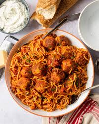

Spaghetti and Meatballs

Description
This is the easiest way to make spaghetti and meatballs. All you need is an Instant Pot and a few ingredients and you're all set.
Serve with fresh or grated parmesean cheese, salad, and garlic bread
Ingredients
- Meatballs
- 1 Lb. Spaghetti Noodles
- 1 Jar Prego Spaghetti Sauce
Steps
- Throw all (yes all) ingredients in the Instant Pot
- Pressure cook for 12 minutes
- Serve